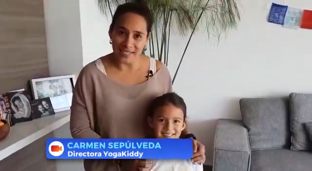

Hola! Hoy les quiero compartir esta cápsula, con la postura de la Mariposa 🦋, que preparamos con Luz para @tvn cuando comenzamos con la pandemia aquí en Chile 😷.
¡Esperamos que la disfruten! Es cortita pero la preparamos con mucho cariño 🤩💕🎬
Gracias querida @karendtv por tu simpatía y presentación, que aunque no sale aquí en el video no la olvidamos.
Un abrazote 😘
Carmen